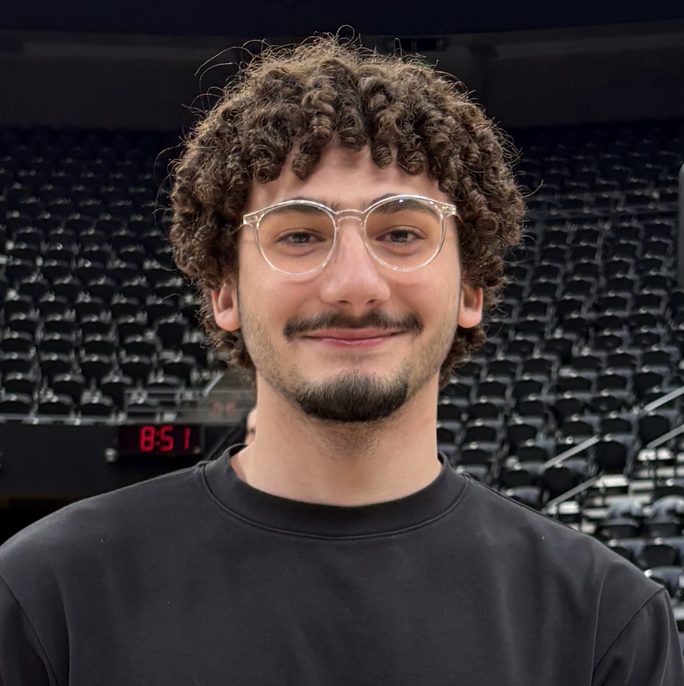

Ahmad Al Najjar
University of Utah · Computer Science & FinTech
Biography
I am a Computer Science student graduating May 1st. I worked significantly on the frontend of DebateIt, while also providing support for backend, I was also in charge of infrastructure and deployment of our platform with Quinn! Other than my time completing my CS degree I worked on completing a FinTech Minor, where I also worked as a TA and RA for the FinTech department. I enjoy the intersection between finance and technology, therefore after graduation I am to find a job within Utah's FinTech industry.
Outside of Academics I enjoy being active. I enjoy playing soccer, golf, and learning new sports [currently rock climbing]. And when I cant get outdoors, I enjoy reading and hopping on my racing simulator!